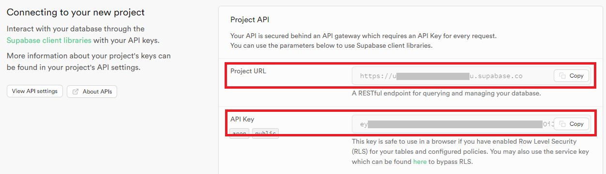

Setup¶
Clone the repository¶
Clone the cacti git repository on your local machine. Follow these instructions to get a copy of the project up and running for development and testing purposes.
App Prerequisites¶
Install Node¶
NodeJS v18 or later is required (we recommend using the Node Version Manager (nvm) if available for your OS).
Install Yarn¶
Run the following command from within the project directory:
Install Docker¶
Ensure Docker Engine is installed and running. You can verify this by running docker ps -aq. Follow the installation instructions for Docker here.
Install required packages¶
You can run the following command from either the root of the project or the cacti-ledger-browser folder:
Setup Supabase¶
Create Instance¶
You can start a local instance of Supabase to be used as the GUI backend using our Cacti supabase-all-in-one image. Alternatively, follow the Supabase Self-Hosting guide.
Using Self-Hosting¶
- Open a new console window in the root of the Cacti project.
-
Build the
cactus-supabase-all-in-oneimage: -
Run the container (detached):
-
Copy and save the
SERVICE_ROLE_KEY(ourAPI Key) from the Supabase environment, it will be needed later: -
Open the Supabase dashboard by navigating to http://localhost:8000/
-
Use the following credentials to log in:
- Username:
supabase - Password:
this_password_is_insecure_and_should_be_updated
- Username:
Using Supabase Cloud¶
Supabase provides a free tier that can be used for development and small projects.
- Open the dashboard https://supabase.com/dashboard/projects
- You'll be asked to log in or sign up if you haven't done that already. You can also use your GitHub account to quickly create the account.
- After a successful login, you'll see a list of your projects (possibly empty). Click the
New projectbutton on the top of the page to create a new project. Select a default organization (or create a new one if needed). - Set any project name and secure database password (remember or save it, it will be needed when setting up some plugin apps). Select a region close to your location.
- Wait for the project to set up.
- You can see connection details on the new project home page. Save the
Project URLandAPI Key, they will be used later on.

Setup DB Schema¶
- Navigate to
SQL Editorusing the navigation panel on the left. Copy the content ofpackages/cacti-ledger-browser/src/main/sql/schema.sqlinto the editor and run the query (Runbutton orCtrl + Enter). - Navigate to
Table Editorand verify that tables were created in thepublicschema.
Alternatively, you can use the psql CLI tool:
Start the application¶
Set the environment variables¶
- Copy
packages/cacti-ledger-browser/.env.templatetopackages/cacti-ledger-browser/.env. - Edit the newly created
.envfile (vim packages/cacti-ledger-browser/.envor similar). - Set
VITE_SUPABASE_URLto:- Self Hosting:
http://localhost:8000. - Supabase Cloud:
Project URLfrom the config page.
- Self Hosting:
- Set
VITE_SUPABASE_KEYto:- Self Hosting:
SERVICE_ROLE_KEYfrom.envfile withing the container. - Supabase Cloud:
API Keyfrom the config page.
- Self Hosting:
- Leave
VITE_SUPABASE_SCHEMAaspublic.
If there are any connection errors to Supabase when running the app, double-check if the data in this file was filled correctly!
Development build¶
The server will run on http://localhost:3001/
Production build¶
The server will run on http://localhost:4173/
Use application¶
By default, there will be no configured apps. Click the Add Application action card to open the wizard that will guide you through the process.
Adding Applications¶
Select Group¶
All (pluggable) applications are divided into groups for better organization.
Select Application¶
Select the application you want to add. Use the Setup Guide button to the right of a given app to open its documentation in a separate card. If there's no documentation for a given plugin, the button is grayed out.
Common Setup¶
These are fields common for all plugin apps.
- Instance Name: Used to uniquely identify the given application.
- Description: Provides more context to the app user.
- Path: Path under which the application routes will be mounted. Example: an app with path
/ethwill be available underhttp://localhost:3001/eth/. Must be unique!
App Specific Setup¶
- Each app may require its own configuration (e.g., access to the database where data is stored, authentication keys, Cacti connector endpoint, etc.).
- These options can be configured using JSON format.
- Each app can define its own custom format, so this will vary from app to app. Consult the application documentation for more details.
App Dashboard¶
On the main page, you can see the list of currently configured applications. Each app has two health indicators:
- Initialized: Indicates whether the plugin and all infrastructure required by it were created successfully.
- Status: Indicates if all components are running.
You can open the detailed status page by clicking the Status button on the app card (this may vary between different plugin apps). You can open the settings page by clicking on the Configure button. Clicking on the card itself will navigate to the plugin application.
At any time, you can navigate back to this page by clicking the app grid icon on the far left of the top navigation bar. You can open the documentation for a given app by clicking the far right question mark button on the navigation bar.